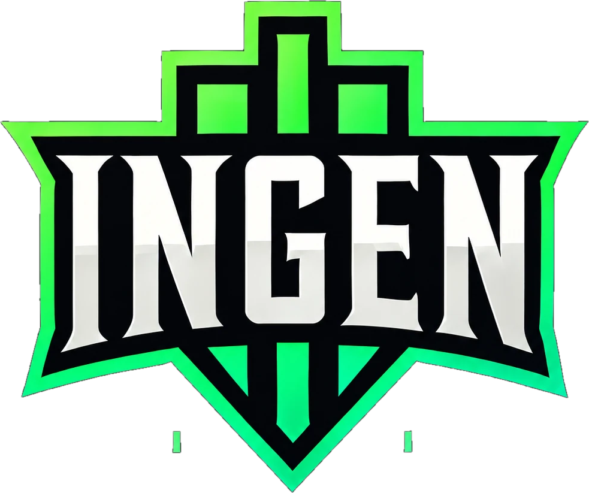

Tudo o que a staff levantou no grupo, organizado por prioridade e por frente de trabalho: stream, site, Discord e o que fica para depois.
As ideias foram reagrupadas por frente de trabalho, e não por quem sugeriu, para que cada frente tenha um responsável e uma ordem clara. O nível de prioridade de cada item é o que foi definido no grupo; a lista original, por pessoa, está no fim do documento.
| Prazo | Prioridade com data marcada: segunda-feira, 16/11. Vem antes de tudo. |
| Prioridade | Entra na fila agora, dentro da sua frente. |
| Alto | Importante, começa assim que as prioridades andarem. |
| Em validação | Precisa de aprovação do grupo antes de qualquer trabalho. |
| Futuro | Fica registrado para uma próxima fase. |
| Frente | Itens | Nível | Quem trouxe |
|---|---|---|---|
| Draft próprio para a live | 1 | Até seg. 16/11 | Israel |
| Stream assets (meta, LivePix, Spotify, música) | 4 | Até seg. 16/11 | Murillo |
| Site (ponte com o Rift Masters) | 1 | Até seg. 16/11 | Murillo |
| Discord (estrutura, visual, engajamento) | 10 | Prioridade | Atlas · Lari |
| Sistema de agenda | 1 | Alto | Atlas |
| Nomes dos times (cartas de baralho) | 1 | Em validação | Atlas |
| Próximas fases | 4 | Futuro | Atlas · Israel · Lari |
Um sistema de pick & ban próprio, pensado para ser transmitido na live, no mesmo espírito das ferramentas de draft já usadas pela comunidade de LoL, mas com interface amigável e personalizável por time.
Novos elementos para o pacote de overlays das lives e a ligação entre o site da INGEN e o do Rift Masters (campeonato à parte do time, coordenado pelo líder da INGEN).
"Organizar o Discord" (Atlas) é a frente; as ideias da Lari são os passos dela. Estão em três blocos e na ordem em que fazem mais sentido: primeiro a estrutura, depois o visual, por último o engajamento, que depende dos cargos já arrumados.
Frente geral: "Organizar o Discord" Atlas Prioridade fica concluída quando os itens 06 a 14 estiverem prontos. Bots e impulsos do servidor estão em Futuro.
As ideias como foram enviadas no grupo, com o número que cada uma recebeu neste documento.
| Nº | Ideia | Nível |
|---|---|---|
| Murillo 5 ideias | ||
| 05 | CTA para o Rift Masters no site da INGEN e vice-versa | Até seg. 16/11 |
| 01 | Stream asset de meta definível | Até seg. 16/11 |
| 02 | Stream asset de LivePix (incluir também na tela de lobby) | Até seg. 16/11 |
| 03 | Verificar a possibilidade de stream asset com a música do Spotify | Até seg. 16/11 |
| 04 | Música nas telas "Já vai começar", "Volto já" e "Encerramento" | Até seg. 16/11 |
| Atlas 4 ideias | ||
| 16 | Nomes dos times no estilo cartas de baralho | Em validação |
| 17 | Sistema de upload de vídeos e cursos de fundamentos básicos | Futuro |
| 06–14 | Organizar o Discord | Prioridade |
| 15 | Sistema de agenda | Alto |
| Israel 2 ideias | ||
| — | Sistema de draft próprio para a live, com logos e cores por time e interface personalizável | Até seg. 16/11 |
| 18 | Rebranding do Rift Masters para a 2ª edição e preparação do site | Futuro |
| Lari · Discord 11 ideias | ||
| 20 | Angariar impulsos para melhorar a aparência do servidor | Futuro |
| 07 | Arrumar os cargos | Prioridade |
| 09 | Arrumar as calls e criar calls de treino (voz e texto) para cada line | Prioridade |
| 10 | Salas de solo/duo, flex e ARAM para a comunidade | Prioridade |
| 08 | Cargos de staff com poder de moderação | Prioridade |
| 19 | Bots de automação (moderação, /elo, match de duo e scrim) | Futuro |
| 11 | Mensagens mais estilizadas para boas-vindas e afins | Prioridade |
| 13 | Incentivos para membros que usam o Discord | Prioridade |
| 14 | Incentivos para quem interage no chat | Prioridade |
| 06 | Validar todos os canais e rever a ordem de prioridade | Prioridade |
| 12 | Rever a estilização do estatuto | Prioridade |